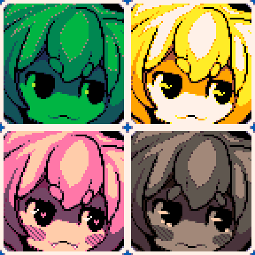

Hobbies!
Durante o tempo eu explorei diversos hobbies na tentiva de encontrar algum que eu gostasse de verdade (Como pintura, escrita, até mesmo esculpir em madeira.), mas só alguns preencheram esse papel!
Pixelart

Os retratos de uma personagem minha.
Por causa do projeto do jogo do primeiro ano (Veja em mais detalhes na aba acadêmica!), eu consegui treinar bem mais a pixelart, e mesmo que o projeto tenha tido um fim, eu continuei praticando.
Na aba galeria, tem diversas das minhas artes! Com o tempo aprendi tecnicas novas e explorei varias paletas que me ajudam até hoje na parte do front-end. No geral, um dos meus hobbies favoritos!
Algumas das ferramentas que eu uso: Aseprite, Lospec (Selecionar paletas e rescalar imagens), Pinterest (Referências), etc...
Atualizações
Como está em estado de desenvolvimento, o site está em constantes atualizações, abaixo será listado as atualizações mais recentes e oque elas trouxeram de novo! Veja a seguir:
- Adicionado esse quadro :)
- Herobrine removido
- Site criado :)
- Herobrine removido